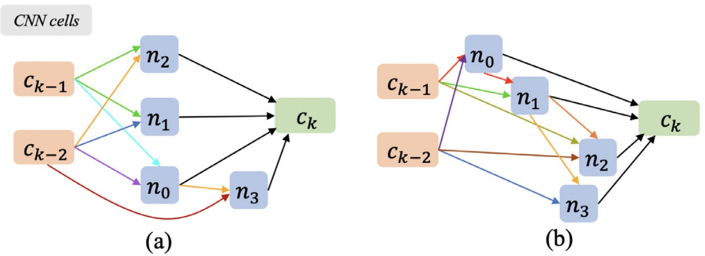

Standard Plane
The standard plane is a specific imaging view in an ultrasound video or volumetric scan. It typically contains particular anatomical structures or regions of interest to help the sonographer diagnose. Generally, during the diagnosis, sonographers first scan pregnant women to obtain ultrasound data, then manually localize standard planes (SPs) from them. Next, they measure biometrics on the planes and make the diagnosis. Of these, SP acquisition is vital for subsequent biometric measurement and diagnosis. However, it is very time-consuming to acquire nearly thirty SPs during the diagnosis, and the process often requires extensive experience due to the large difference in fetal posture and the complexity of SP definitions.

Start from industrial
Starting in 2017, we collected over 10k fetal ultrasound videos with 1 million image frames. We built and evaluated an AI-driven SP localization model on this collection and successfully deployed it as a plugin in the Wis+ ultrasound platform in S60 color doppler diagnostic ultrasound system in SonoScape Co., Ltd..

Towards 3D ultrasound with reinforcement learning
We propose the first reinforcement learning (RL) framework to localize fetal brain SPs in prenatal US volumes. First, we equip the RL framework with a landmark-aware alignment module for a warm start to ensure its effectiveness. All the volumatric data are aligned to a plane-specific atlas to provide strong spatial bounds for RL agent actions. Then, instead of passively and empirically terminating the agent inference, we propose a recurrent neural network (RNN) based strategy for active termination of the agent’s interaction procedure. The RNN-based strategy can find the optimal termination point adaptively, so it improves the accuracy and efficiency of the localization system at the same time.

Robotic demo of the reinforcement learning for searching the standard plane:

Tangent-based formulation
We define a new tangent-point-based plane formulation in RL to restructure the action space and significantly reduce the search space; we design an auxiliary task learning strategy to enhance the model’s ability to recognize subtle differences crossing Non-SPs and SPs in plane search; we propose a spatial-anatomical reward to effectively guide learning trajectories by exploiting spatial and anatomical information simultaneously.

Collaborated Works
|  |
Searching Collaborative Agents for Multi-plane Localization in 3D Ultrasound
Xin Yang, Yuhao Huang, Ruobing Huang, Haoran Dou, Rui Li, Jikuan Qian, Xiaoqiong Huang, Wenlong Shi, Chaoyu Chen, Yuanji Zhang, Haixia Wang, Yi Xiong, Dong Ni Medical Image Analysis, 2021 |